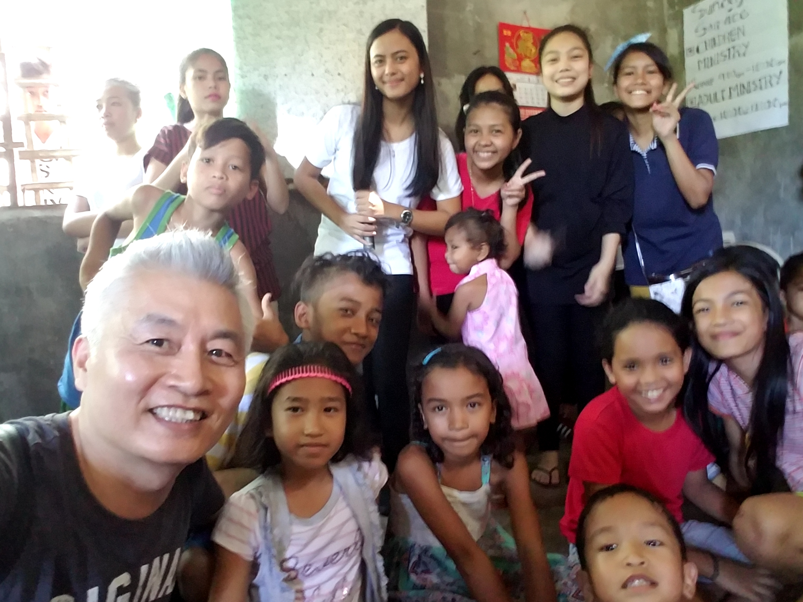
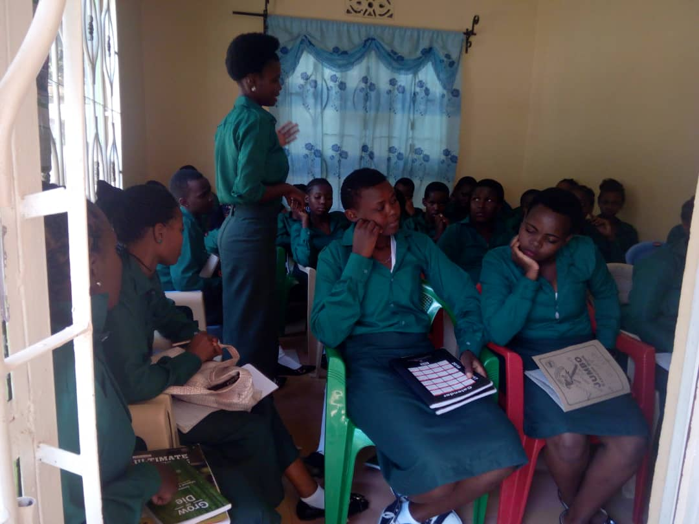
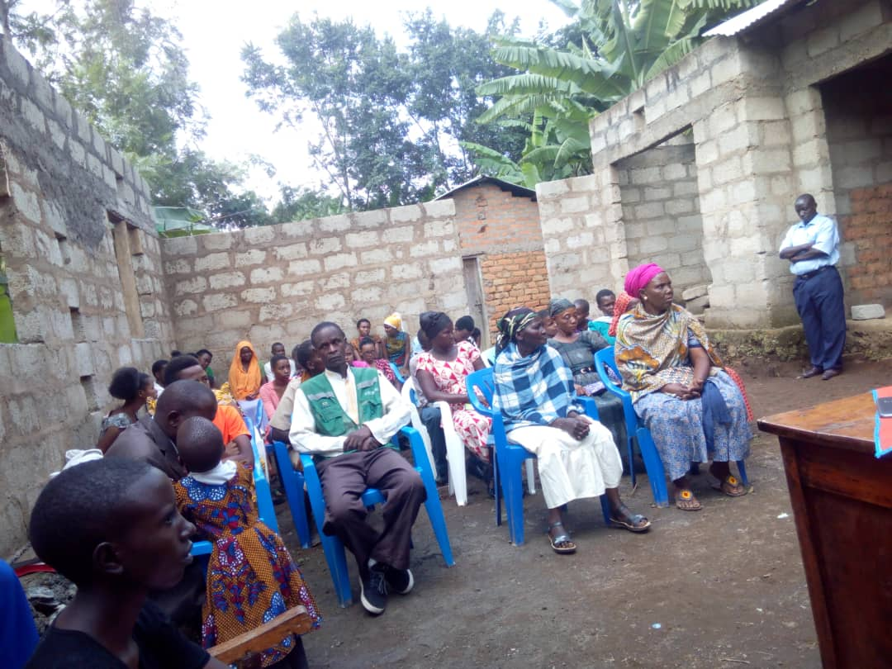

1. Find a rural school that is about 4 hours away from the city (there are local differences). 2. Students are recommended to the school principal from 50 to 60 students who are raised in grandmother hands without a parent or mother, regardless of religion or school records. A missionary and a local church pastor visit the children's house together. The reason is to look at the lives of children directly and to support children who really need scholarship support. If you do, you can hear a detailed story about the child from this neighbor. After confirming the financial status and family relationship of the students who support the preliminary scholarship, we will select about half of the 50 ~ 60 students. 3. We look for a lady who can give lunch and lunch to 30 scholarship members in the family of faith or sincere people 4. Lunch every day with a class (usually you will need to help your children lunch with lunch). We will serve lunch with rice, meat, fish, vegetables, etc. We usually expect to spend about $ 30 a month at a price of about $ 1 a day.) 5. If you are seated after 2 ~ 3 months, consult with the principal. I would like you to have a time to meet all the students once a week. Usually one hour will be given, and at that time, all the students will be able to gather the Bible to all students through local pastors and evangelists. Praise, rhyme, and recitation of the Bible. We also distribute snacks. How to use 1 hour 1) Praise and rhythm time 2) Tell the story of the Bible (comic, puppet show, storytelling) and ask the student again the character or story of the story of this week's story, and present a cake if you answer the correct answer. 4) The whole student finishes the episode with prayer after the last praise. Provide children with snacks and bless them at the entrance. (Promoting community consciousness) Average budget One meal for 20 days Uses 20 for the whole month 1 for 1 dollar For the remaining 10 dollars, 10 dollars will be used for uniforms, notebooks, bags and so on. Kitchen 4,000 pesos ($ 80) Electricity cost 2,000 pesos ($ 40) A total of $ 30 * 30 people = $ 900 is needed every month. Total 1100 ~ 1200 The remaining amount will help you with school uniforms, school supplies, bags, etc. After two or three years, all upper secondary schools will be filled with scholarship children) Donors and recipients of scholarships Every month, more than once a month, they communicate with each other in any way (such as video, messenger, etc.). It is not only a financial sponsor, but also a spiritual mother and father. If possible, visit the mission field once a year and allow the beneficiary to spend more than one day together.


